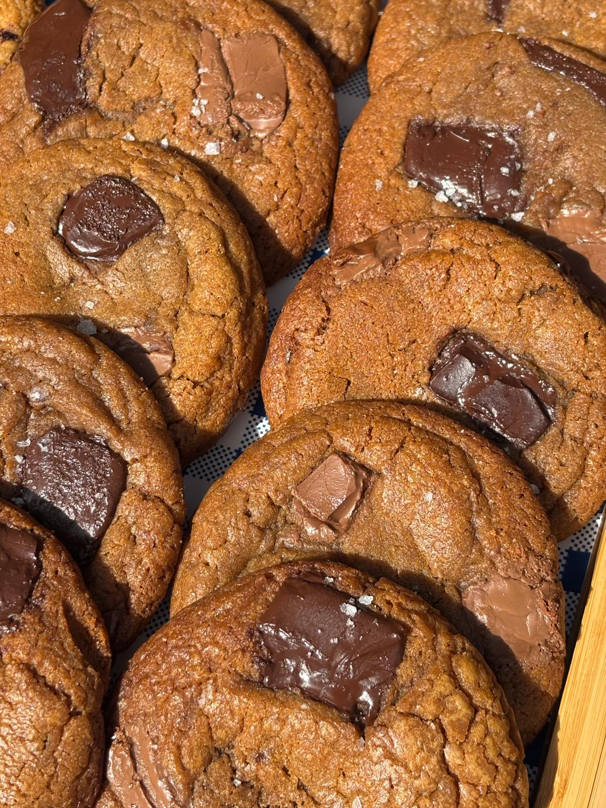

Brown Butter Cookies

Brown butter cookie base with milk and dark chocolate chunks
This one is everything a cookie should be. Soft and chewy, sweet and salty, and rammed full of chocolate.
Combining dark brown sugar with browned butter gives a richer, fuller flavour and also means you get that dark cookie colour.
We use a mixture of chocolates and add a sprinkle of salt to really make the taste pop in your mouth and
to balance out some of the sweetness.
This recipe will make around 45 cookies so feel free to divide as required for a smaller batch.
Ingredients
- Plain flour - 1500g
- Baking soda - 5 teaspoons
- Browned butter - 900g
- Salt - 2 teaspoons
- Dark brown soft sugar - 1150g
- Granulated sugar - 250g
- Large eggs - 6
- Dark chocolate chunks - 500g
- Milk Chocolate chunks - 300g
Steps
- Heat the butter in a medium pan until it just boils. Leave to cool and darken.
- Combine the flour, baking soda and salt in a bowl and set aside.
- Once the butter has cooled, add it to a separate bowl with your sugars and mix well.
- To this bowl add the eggs and combine.
- Once combined, add in the bowl of dry ingredients from earlier and mix well.
- For best results now chill the dough in the fridge for a few hours.
- Roll the dough out into even balls. We recommend 80g each.
- Then push a few chocolate chunks into each dough ball.
- Add the dough balls to parchment lined baking trays, leaving enough space for them to spread out as they bake.
- Put the trays into a pre-heated oven at 180c and bake for 13 minutes.
- Remove and allow to cool.
Back to home